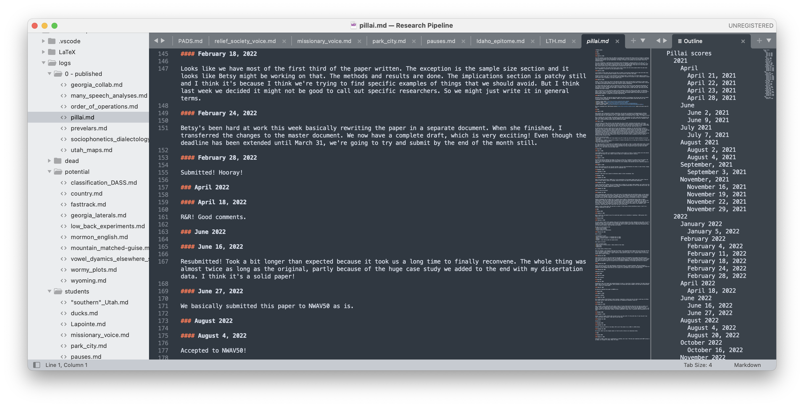

As of this week, I am now halfway through my fourth year of working at Brigham Young University. I successfully passed my third-year review earlier this year, and I’m starting to think about tenure, or what BYU calls tenure, “Continuing Faculty Status” (CFS). I thought I’d take some time and write about the process I use for keeping track of my research and publications to help me stay on track towards tenure.
The need for a system
In my first semester here, I realized quickly that I needed a system to keep track of my research. I had some leftover projects from grad school that were in various stages of completion and that I wanted to get finished. I was also beginning some new research as well, some solo, some with students, and some with collaborators. It was getting to the point where I couldn’t immediately remember all the projects I was working on. I knew that if I wasn’t diligent about keeping up with them, then some would fall through the cracks.
The Research Pipeline
It just so happens that I stumbled across what really turned out to be the perfect solution for me just a month into my first year. The paper is “Managing your Research Pipeline,” by Matthew J. Lebo, published in the American Political Science Association in 2016 (DOI: 10.1017/S1049096516000160). In it, Lebo describes a system that he uses to keep track of his research pipeline. It is an ideal solution for my brain and organizational style and I have now been using it consistently for three years now.
The system is based on the premise that publishing a single academic paper can be a daunting task. And if your goal is to publish, say, six papers by the time you go up for tenure, then that task is so much scarier. Oftentimes, when I’m faced with too daunting of a task, I just don’t do it, even if I need to! So, rather than have one very large goal of “publish a paper”, Lebo breaks it down into seven sub-goals:
- Stage 7 - You have a research idea.
- Stage 6 - IRB is completed, data is collected, and analysis is finished. You have everything you need to start writing. Depending on the nature of the data collection—like if you’re running a new experiment or need to otherwise collect brand new data—it might take a long time to get from Stage 7 to Stage 6. If you’re using an existing dataset or reprocessing something old, it might take less time.
- Stage 5 - The paper has been written up as a (500-word) abstract and has been submitted to a conference. In the original article, Lebo suggests that you’ve reached Stage 5 if you have a full draft of the manuscript. In his field, it must be more common to have a paper drafted before going to a conference. Since that’s not how my workflow has ever been, I’ve changed it to having an abstract. To me, an abstract is a good fit here because it means I have an outline, at least a brief lit review, a coherent presentation of the results, and contextualization with other studies.
- Stage 4 - The paper is presented at a conference. This is a large step from Stage 5 because it means I have basically the entire paper but in a powerpoint format. This includes figures, the best examples, argumentation, greater impact, etc.
- Stage 3 - The paper is submitted to a journal. In my experience so far, the maw between Stage 4 and Stage 3 is huge. I can crank out a conference talk without too much work. But actually sitting down and turning that conference talk into a paper is a huge task. Even if the paper sticks very closely to the original presentation, it’s a lot of work. For me, advancing to Stage 3 is cause for celebration.
- Stage 2 - You get an R&R from the journal. Or anything other than a reject. This means you’ve got your foot in the door and it potentially publishable. It’s just a matter of (usually) a little more work to get it to publication. If you get a reject, the paper moves back to Stage 4.
- Stage 1 - You submit the revised version of the paper back to the journal.
- Stage 0 - The paper is accepted for publication.
By itself, breaking the task down like this I think is a great idea. It’s nice to see what the next step is.
The Point System
Okay, but turning a large task into a smaller task is not a novel idea. What Lebo’s paper does though is assign points for each of these steps. Seven points for every paper in Stage 7, three points for Stage 3, etc. As a paper moves closer and closer to completion, the number of points it’s worth gets smaller.
So, if you’re ultimate goal is to have, say, six papers by the time you go up for tenure, that’s 42 points you need to reduce your score by in six years, assuming you’re starting from scratch. There are 72 months in six years, so you’ll need to reduce your score by one every 1.7 months, or rather, one every one to two months, or rather, 2–3 points every semester. That to me seems like a much more reasonable task. My guess is you’re not coming in from scratch, so you can realistically work at a slower pace than that, perhaps just two points a semester. So, it’s scary to face this monster goal of publishing six papers, but it’s less scary that you just need to reduce your score by a few points every few months.
It’s clever that you have to reduce your score instead of tallying points up. But it makes sense. Let’s say a project idea is worth one point and a published paper is worth seven. Well, 42 project ideas aren’t going to get you tenure. Neither will 14 abstracts or 11 conference presentations. You actually have to move papers all the way through the full pipeline to achieve the goal of zero/tenure.
With that in mind, I’ll give you a peek into my rate of productivity. When I first started this system, I took stock of my current projects. I was coming out of grad school and had a few publications already far along the pipeline. So I only needed to reduce my score from 14 to get to my minimum goal of six papers. I knew I’d be able to reduce my score by more than two points a year though, so I set a stretch goal of 14 papers, which put me at 68 points. Right now, I have just three of those 68 points left. (Calm down: some of those papers low-tier, non-peer-reviewed papers or are collaborations that I wasn’t too involved with!) So I’ve averaged a score reduction by about 1.7 points every month. It ebbs and flows though. Conference weekends when I’ve got three presentations are balanced out by months with zero progress.
Monthly Evaluations
When I first read the paper, I started off by evaluating all of my ongoing projects. As part of the process, I wanted to create a log for each one. So I went through emails, datetime stamps on files, and whatever other documentation I had to reconstruct a log with key dates. I also set up my “Research Pipeline” files and made plans and stuff. I remember this a couple days.
To keep myself on track and to regularly remind myself of where I am with my projects, I do monthly evaluations. During the last workday of the month, I take an hour and systematically go through every project that is currently assigned a point value. I add to each project’s log whatever progress was made that month (if any). If I remember, I add to the log throughout the month as well. Here’s a sample from me and Betsy Sneller’s Pillai scores paper:

On a master document, I have a list of my current projects, what their point value is, and the date of the last milestone. I also have an overview of what happend that month (with dates), how I did on my goals from last month, and my goals for the next month, with anticipated changes in point values.
I then add to two spreadsheets that show my progress over time. This first one shows the history of the points for each project. This one is kinda cool because it shows what projects were in what stages at any month during the past three years. It also shows that some projects take a long time and others are shorter. They’re in order by publication date, so I move them up and down as needed. You can see that I actually have five categories of goals: minimum (6), goal (10), stretch (14), “reach for the stars” (20), and bonus. Also, this spreadsheet is extremely useful for annual interviews with my department chair because I can see at a glance which papers got published or presented at conferences and when. You can also see I’m currently sitting on lots of 4-pointers—papers that have been presented at conferences but not yet written up an submitted. Guess what I’ll be doing in 2024!
Also, this spreadsheet makes it easy to see which projects are stagnating. My rule of thumb is that if a project has been at the same stage for 12 months, then I move it to my graveyard. No sense in worrying about it anymore. Of course, this is done on a case-by-case basis, but it’s a good guideline for me. If I do abandon a project, I move its row in the spreadsheet down past the bottom of what is shown above in case I need to revive it. I also remove it from the master document I showed above and I stop updating it’s individual log.
The other spreadsheet is focused on my points. Here I can see my pace and whether I’m on track to reach my goal or if I’m falling behind. As I said before, I’m only three points away from hitting my stretch goal. I still have 25 points to go to hit my “reaching for the stars” goal. On the right side of the spreadsheet, I have columns for each point progression (going from 7 to 6, 6 to 5, etc.). Reading the columns from top to bottom makes it easy to see when papers were published.
As if those monthly reminders weren’t enough, I also print out papers for every one of my projects in progress and put them on my wall, with a brightly-colored post-it note showing the point value. Right now, only my first-authored projects get their own paper (because it was taking up too my room on my whiteboard), so I have a separate category for work co-authored with students, and other collaborations that I only play a minor role on. Here’s what my wall looks like.


So, with this system I force myself to think about my research all the time. Even if I’m teaching three courses a semester, I still see the papers on my wall every day, and I still evaluate each project once a month. Especially since I do a fair amount of collaborative work, I’m surprised at what progress can be made during a busy teaching semester.
Small Caveats
I’ve been using this system for three years and I love it and have no intention of ditching it. But, I have also noticed a few things it doesn’t quite handle as well.
If a paper goes through multiple rounds of review, it’s sort of stuck in Stage 1. It doesn’t make sense to lower it to Stage 2 when a second review comes in because it’s still progress. So, that work isn’t “rewarded” in the point system even though it may be a substantial part of what I do that month.
This is just a small one, but getting accepted to a conference is currently not rewarded by this system. Writing (and submitting) an abstract does, and presenting does. But sometimes I get an exciting acceptance email and I wish I could update my points, but there’s no change.
Sometimes, a single study is presented at multiple conferences. That’s what happened with me and Betsy’s Pillai scores paper: we presented at ASA and NWAV. It was going to be one paper the whole time, so there was no reason to split it up into two projects in my spreadsheet. But prepping the NWAV abstract and doing the presentation were not really accounted for in this system because the project was already at Stage 4. (Actually we had already gotten an R&R by the time NWAV happened, so it was at Stage 2.)
Occasionally, stages get skipped. This can happen in collaborations with students where we decide just a few weeks or days before the deadline to turn their work into a conference abstract. So, that project enters my research pipeline basically at Stage 5, rather than 7 or 6. (My Missionary Voice paper with Josh Stevenson at LSA2024 was like that.) Stage 6 is usually short because it’s often the case that we finish the analysis and are ready to go because we need to write an abstract. (My “Idaho English the Epitome of Average English” presentation at ADS2023 was like that.) And if a project is not presented at a conference and goes straight to journal publication. (My second Order of Operations paper in Linguistics Vanguard was like that.) Not a big deal; it’s okay to skip.
Finally, as we mentioned at ADS this year, I’m a co-editor of the 2024 PADS volume (with Peggy Renwick and Monica Nesbitt). The pipeline for editing a volume is a bit different than for a single paper. So even though I’ll get rewarded in my tenue portfolio for that, it doesn’t quite fit into the point system.
These are mostly minor drawbacks. I’ve noticed too that this system encourages certain behavior.
I’m motivated to publish everything I present at conferences. If I don’t, it’ll eventually move to the graveyard. That decrease from 7 to 4 points is wasted and my score will go up when I toss the project. That’s not to say that projects that terminate in conferences presentations are wasted, but I’m less likely to get funding for future conferences if I don’t publish stuff I present at past ones. This also means I really think hard about what I start on and present at conferences because I don’t want to do the work of working it from a 7 to a 4 unless I can eventually get it to a 0.
This system also discourages submitting the same paper to multiple conferences. Then again, my funding situation also discourages that too, so I guess it’s good that they align that way.
The system does encourage follow-up studies, break-off papers, and continuations of projects though. I can work with the same data and skip the first stage or two and get a jump start on the points instead of starting over from scratch at Stage 7.
Conclusion
So that’s the system I use for keeping track of my research projects. So far, it has worked well and has encouraged me to continue cranking things through the pipeline. It constantly reminds me of what papers I need to write-up next. And given that I have a lot of papers in Stage 4, it discourages me from starting some new shiny thing at the expense of existing projects. I highly recommend reading Lebo’s paper and seeing if the system works for you.